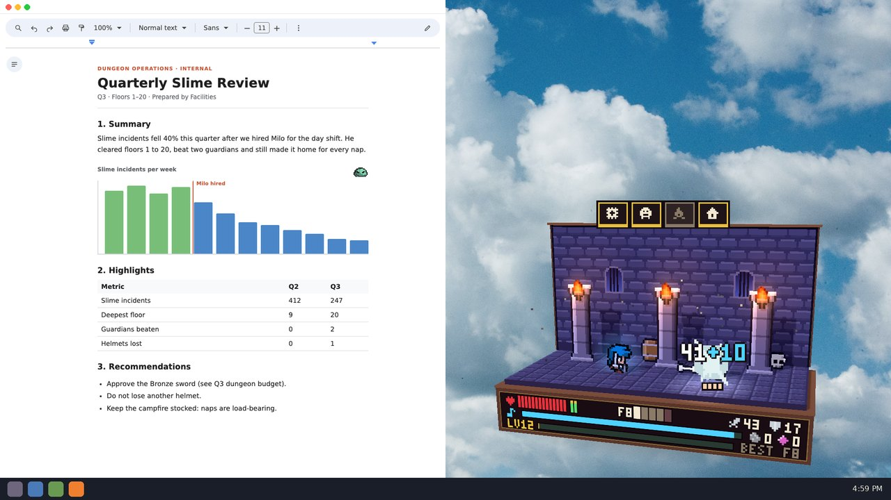

Press kit
Milo's Day Shift
Summary
Your new coworker lives in a pop-up diorama on your desktop. Milo clocks in, battles slimes and skeletons room by room, and trudges home to nap by the campfire when he's pooped. Spend his loot to forge better swords and grow a cozy little town, or just let him work.

Features
- Pixel-art paper cutouts on a wooden base fold down and pop up like a storybook. There's no window around it, so clicks pass straight through to whatever you're working on.
- Forge Milo's sword and shield from Bronze up to Adamant, and you'll see every upgrade on him.
- Raise a town and collect relics on the way down. Five biomes, 50 floors, then Overtime.
- He keeps working while the game is closed. Nothing is ever lost.
- Click him mid-fight to cheer him on, or while he naps to help him heal. Leave him alone and you never fall behind.
- Crit home runs, paper-spin knockouts, mimics, and bosses that hit the floor with a thud.
- Frame rate and window size are adjustable, so it can stay open all day.